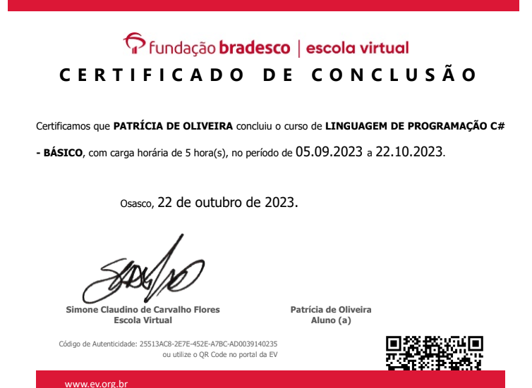

Meus Certificados

ANÁLISE DE DADOS COM PYTHON

SQL DO BÁSICO AO AVANÇADO

FUNDAMENTOS EM CLOUD AWS

INTRODUÇÃO AO AMBIENTE.NET

ENGENHARIA DE PROMPT: CRIANDO
PROMPTS EFICAZES PARA IA GENERATIVA

LÓGICA DE PROGRAMAÇÃO

VERSIONAMENTO DE CÓDIGO GIT/GITHUB

ESTRUTURAS DE REPETIÇÃO C#

TIPOS DE OPERADORES C#

LÓGICA DE PROGAMAÇAO COM JAVASCRIPT

HMTL E CSS AMBIENTES DE DESENVOLVIMENTO

TRELLO

FORMS - MICROSOLFT

FOCO:TRAZENDO MAIS RESULTADOS PARA O DIA A DIA

PYTHON

LINGUAGEM DE PROGRAMAÇÃO C#

PACOTE OFFICE